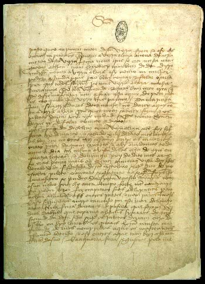

CARTA PERO VAZ DE CAMINHA
ㅤContexto
ㅤ- A “Carta de Pero Vaz de Caminha” ou “Carta a el-Rei Dom Manoel sobre o achamento do Brasil” foi um documento escrito pelo escrivão português Pero Vaz de Caminha.
Redigido em 1.º de maio de 1500, em Porto Seguro, Bahia, foi levado para Lisboa sob os cuidados de Gaspar de Lemos, considerado um dos maiores navegadores de seu tempo.
ㅤ Apesar de ter sido escrita no século XVI, a Carta foi descoberta muitos anos depois, no século XVIII, por José de Seabra da Silva (1732-1813). Ele era estadista, ministro e guarda-mor da Torre do Tombo. Sua aparição oficial e acadêmica é obra do filósofo e historiador espanhol Juan Bautista Munoz (1745-1799). No Brasil, sua primeira publicação foi em 1817, na obra “Corografia Brasilica”.
Provavelmente, a primeira versão editada no Brasil foi do Padre Manuel Aires de Casal (1754-1821). Ele era geógrafo, historiador e sacerdote português que viveu boa parte de sua vida em território brasileiro.
Importante notar que a Carta de Caminha é considerada o primeiro documento redigido no Brasil e, por esse motivo, é o marco literário do País. Ele faz parte da primeira manifestação literária pertencente ao movimento do Quinhentismo.
Resumo da carta

- Carta de Pero Vaz de Caminha
O Manuscrito da Carta de Pero Vaz de Caminha
Composição da Carta
Iniciada como um processo epistolar de praxe, a Carta, após desenvolver os primeiros parágrafos, realizando toda a reverência ao monarca D. Manuel I (1469-1521), irá continuar como um diário comum.
- Sobre sua composição, foi escrita em sete folhas, cada qual dividida em quatro páginas. Da conotação fonética das marcas ortográficas, vale citar que Caminha reproduz o estilo de época típico dos textos portugueses até o século XV.
- Sua periodização torna o manuscrito um produto organizado e bastante ordenado cronologicamente.
- O escrivão pontua seu texto de modo a provocar um efeito expressivo capaz de prender a atenção do leitor. Além de garantir que a leitura do manuscrito seja bastante simples
ㅤConteúdo da Carta
Sobre o seu conteúdo, foi uma carta redigida para o rei, de modo a comunicar-lhe o descobrimento das novas terras.
O deslumbramento dos europeus em relação à descoberta do "Novo Mundo" é bem evidente nos registros feitos por Caminha. Na Carta ele descreve suas impressões sobre o território que viria a ser chamado de Brasil.
Ele documenta a composição física à primeira vista do território. Além disso, narra o episódio do desembarque dos portugueses na praia, o primeiro encontro entre os indígenas e os colonizadores, e a primeira missa realizada no Brasil.
ㅤCuriosidade
O termo “descobrimento” é muito combatido atualmente pelos estudiosos brasileiros. Isso porque deixa à margem os povos indígenas que habitavam o território no momento da chegada dos “descobridores”.
ㅤTrechos da Carta
Descritivismo e Exaltação da Natureza "Águas são muitas; infinitas. E em tal maneira é graciosa que, querendo-a aproveitar, dar-se-á nela tudo, por bem das águas que tem.” 🔹 Aqui, Caminha descreve a abundância de água e a fertilidade da terra, exaltando as riquezas naturais.
Visão Eurocêntrica e o Olhar do Colonizador sobre os Indígenas "Eram pardos, todos nus, sem coisa alguma que lhes cobrisse suas vergonhas. Acerca disso eram de boa estatura e de bons rostos.” 🔹 Esse trecho mostra o olhar europeu sobre os indígenas, enfatizando suas características físicas e o estranhamento em relação à nudez.
Caráter Religioso e Intenção Catequética "Ali comungaram e ouviram missa com tanto prazer e solenidade como se fora na nossa Sé.” 🔹 A importância da religião é evidenciada pela referência à missa e à catequização dos nativos.
Tom de Relato Oficial "E, para darmos conta ao Vossa Alteza do que nestes portos achamos, e do que mais adiante houvermos de achar, aqui fica esta escrita.” 🔹 A carta tem um tom informativo e oficial, pois foi escrita para o rei com o objetivo de relatar a descoberta.
Quem foi Pero Vaz de Caminha?

Pero Vaz de Caminha nasceu na cidade do Porto (Portugal) em 1450 e faleceu na cidade de Calicute (Índia) em 15 de dezembro de 1500.
Seu pai era o Duque de Bragança e, portanto, teve uma educação sólida. Trabalhou como tesoureiro e escrivão na Casa da Moeda. Além disso, ocupou o cargo de vereador da cidade do Porto, em Portugal.
Em 1500 Caminha acompanhou a frota de Pedro Álvares Cabral ao Brasil, sendo responsável por escrever sobre as impressões da terra avistada. Sem dúvida, esse foi o maior feito de Caminha e que o imortalizou.